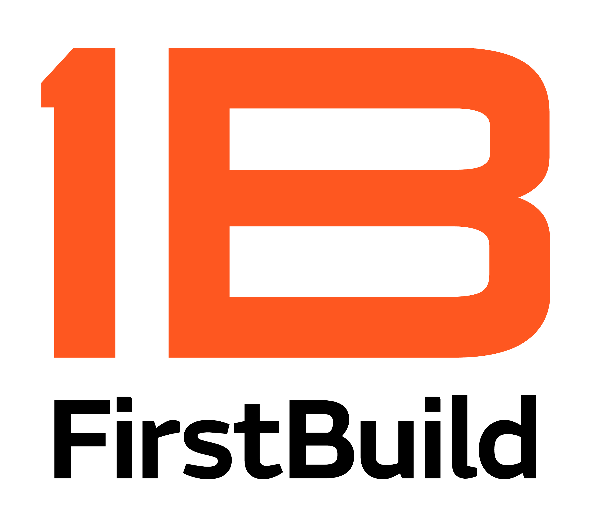
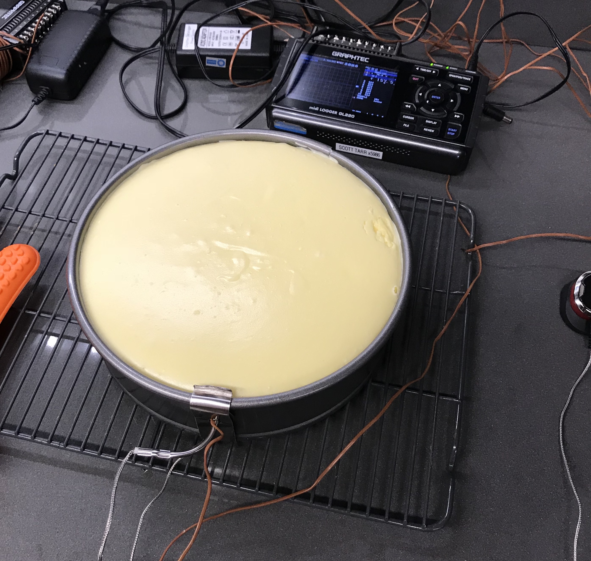

Previous Employers
Work History
FirstBuild - Louisville, KY
August - December 2017
While at FirstBuild I got to work on some projects that I really enjoyed. I spent a lot of time pototyping, demoing, then iterating based on feedback. While making
prototypes I utilized 3D modeling, 3D printing, and silicone casting. I had the opportunity to work closely with the industural design team to make sure our product worked flawlessly and was a joy to use. On several occasions I was able to
help
demonstrate prototypes to the CEO & CTO of GE Appliances. Additionally, I also was working to diagnose an issue with an existing oven temperature probe that spans many product lines at GE Appliances. To test probes I created my own data logger
to
collect data and find the root of the issue with the inaccurate temperatures the probe was reading. Based on these results my team was able to propose changes to GEA on how to improve the current temperature probe.
At FirstBuild I felt a real passion for my studies as an Engineer. I had the opportunity to learn and practice many skills during work and many times after
work spending time on my own projects. I was able to increase the breadth of my 3D printing skills and am now able to untilize flexible material effectivly. For many project we would often need a quick part, for this I quickly became very
talented in using the laser cutters. After work hours I had the opportunity to improve my skills on the CNC router. I also was able to become certified on the water jet and was able to cut some parts for my personal 3D printer.
GE Appliances - Louisville, KY
January - May 2017
While at GE Appliances I worked in the cooking technology division working with the microwave team. My main project was improving an existing microwave life
testing fixture. When GEA does life testing on their own units they typically flash the control boards with a special firmware that runs the microwave on and off continuously until failure. However, this is problematic if you want to test a
competitor unit as we are unable to reflash their units. The solution is a fixture that covers the control buttons of the microwave and automatically presses buttons to start cycles contunously until failure. The brain for this project was an
Arduino which I previously had no experience with. So the first couple weeks of work I spent many hours teaching myself basics about programming Arduino. Within a couple weeks I was able to understand the previous code for the testing device
and was able to improve it from there. I added safety measures including a current sensor so the unit could be cut off from power if there was an internal short and several thermistors to sense a if the unit was overheating. Lastly, I added
EEPROM support to keep a constant count of total cycles run on the unit that could survive a power outage. This count was then printed to external display.
Since I was young I always wanted to learn more about electronics and coding, luckily at GEA I had the opportunity to be immersed in both. I quickly
learned the importance of both in engineering and grew passionate about both.
GEM Incorporated - Walbridge, OH
May - August 2016
While at GEM Incorporated I had the opportunity to work with the CAD & VDC (Virtual Design Construction) team. I got to travel to different work sites and help laser scan working job sites. Most companies that come to GEM for laser scanning are looking to make upgrades to their plant My work a GEM was the first time I was able to apply my engineering studies in a professional setting.
Throughout my time at GEM I realized my decision to pursue engineering was a good one. This co-op helped me realize my love for problem solving and 3D design.